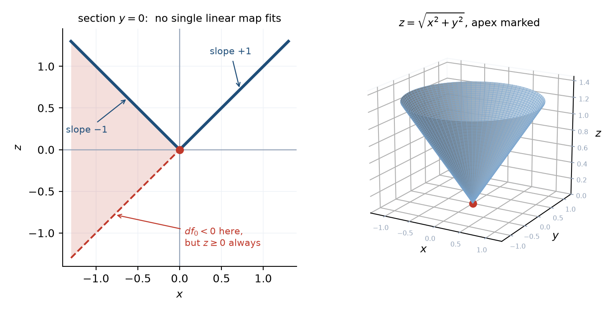
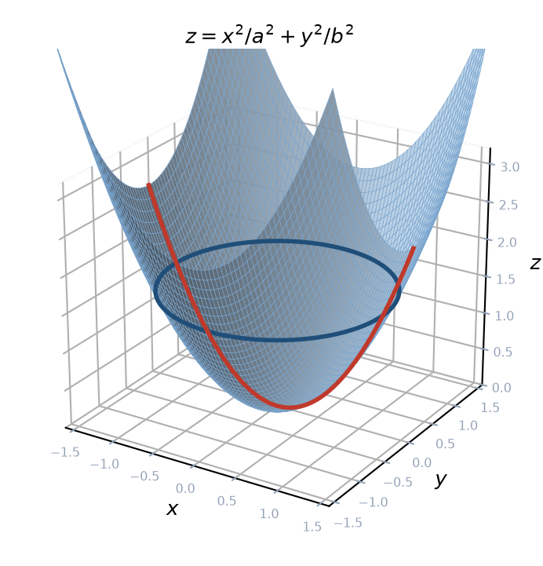
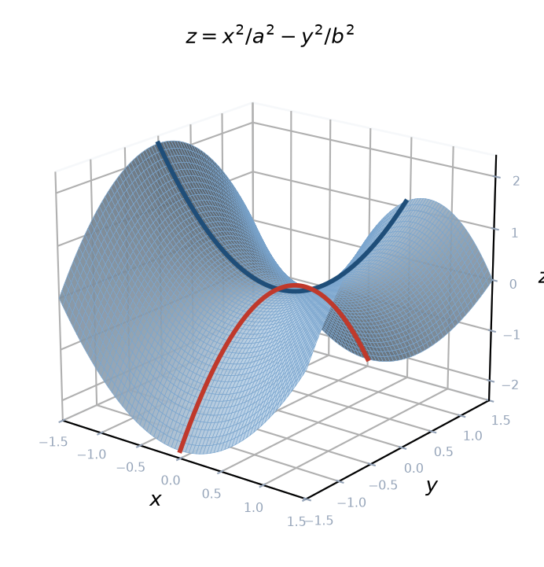
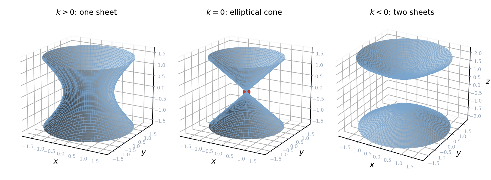
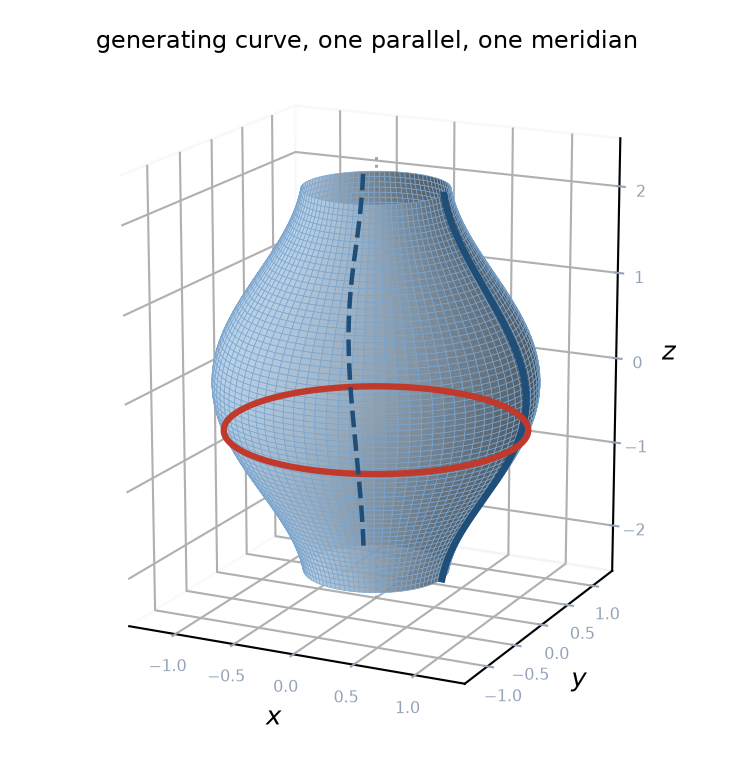
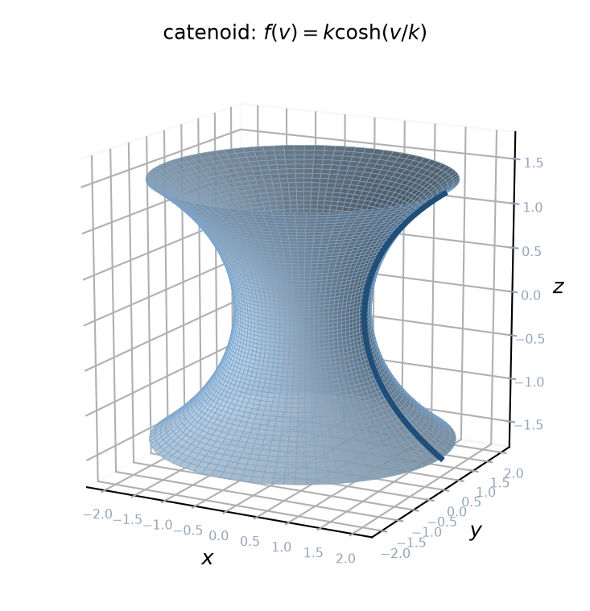
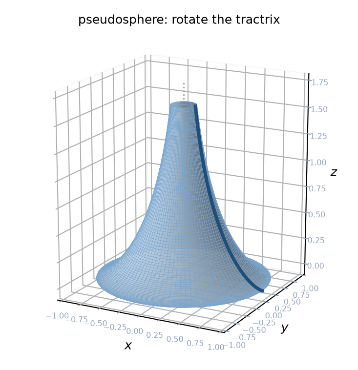
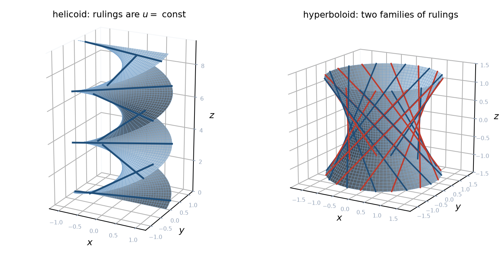

6 תרגול 6: משטחים והמישור המשיק
6.1 משטחים
עד כה עסקנו בעקומות, שהן אובייקטים חד־מימדיים, ומכאן ואילך נעסוק במשטחים, שהם דו־מימדיים. נתחיל בהגדרות הכלליות, ולאחר מכן נצטמצם למקרה שמעניין אותנו בקורס.
הגדרה 6.1.1 — הומאומורפיזם.
יהיו \(X\) ו-\(Y\) שני מרחבים טופולוגיים. פונקציה \(f : X \to Y\) נקראת הומאומורפיזם אם היא מקיימת את שלוש התכונות הבאות:
- \(f\) היא חד־חד־ערכית ועל, כלומר היא התאמה חד־חד־ערכית בין נקודות \(X\) לנקודות \(Y\).
- \(f\) רציפה.
- הפונקציה ההופכית \(f^{-1} : Y \to X\) רציפה אף היא.
אם קיים הומאומורפיזם בין \(X\) ל-\(Y\), אומרים ש-\(X\) ו-\(Y\) הומאומורפיים ומסמנים \(X \cong Y\).
הערה 6.1.2 — מה הומאומורפיזם מזהה.
הומאומורפיזם מגדיר מתי שני מרחבים שקולים מבחינה טופולוגית, כלומר מתי ניתן לעוות, למתוח או לצמצם מרחב אחד כדי לקבל את האחר, בלי לקרוע אותו ובלי להדביק חלקים נפרדים.
הגדרה 6.1.3 — יריעה.
יריעה ממדית \(n\) היא מרחב טופולוגי \(M\) שלכל נקודה בו יש סביבה פתוחה הומאומורפית למרחב \(\mathbb{R}^n\). באופן פורמלי, לכל נקודה \(p \in M\) קיימת סביבה פתוחה \(U\) והומאומורפיזם \(\phi : U \to V\), כאשר \(V\) היא קבוצה פתוחה ב-\(\mathbb{R}^n\).
הערה 6.1.4 — יריעה נראית מקומית אוקלידית.
אינטואיטיבית, יריעה היא מרחב שכאשר מסתכלים עליו מקרוב, כלומר בסביבה המקומית של כל נקודה, הוא נראה ומתנהג כמו מרחב אוקלידי \(\mathbb{R}^n\).
הגדרה 6.1.5 — מפה ואטלס.
תהי \(M \subseteq \mathbb{R}^3\). מפה היא פונקציה \(r : U \to M\) חד־חד־ערכית מקבוצה פתוחה \(U \subseteq \mathbb{R}^2\) אל \(M\). אטלס הוא אוסף של מפות שמכסות את \(M\) כולה.
הגדרה 6.1.6 — יריעה דיפרנציאבילית.
יריעה דיפרנציאבילית היא יריעה המצוידת באטלס שבו לכל שתי מפות \(\phi_i\) ו-\(\phi_j\) ההרכבה \(\phi_i^{-1} \circ \phi_j\) היא חלקה מסוג \(C^k\) עבור \(k\) כלשהו. במשפטים שלנו נדרוש \(k = 2\).
הערה 6.1.7 — ההבדל בין משטח ליריעה.
משטח הוא מקרה פרטי של יריעה, ושני הבדלים מבחינים ביניהם:
- משטח מוגבל למימד \(2\) בלבד, בעוד שיריעה יכולה להיות מכל מימד.
- משטח משוכן במרחב \(\mathbb{R}^3\), ואילו יריעה מוגדרת בפני עצמה, ללא תלות במרחב חיצוני העוטף אותה. לכן ביריעה אפשר לחקור תכונות פנימיות בלבד.
עתה נגיע להגדרה המרכזית. נאמר בקצרה שמשטח רגולרי הוא קבוצה ב-\(\mathbb{R}^3\) שנראית מקומית כמו מישור דו־מימדי, וההגדרה המדויקת מפרטת מה בדיוק נדרש.
הגדרה 6.1.8 — משטח רגולרי.
תת־קבוצה \(S \subseteq \mathbb{R}^3\) נקראת משטח רגולרי ממימד \(2\) אם לכל נקודה \(p \in S\) קיימות סביבה פתוחה \(V \subseteq \mathbb{R}^3\) המכילה את \(p\), קבוצה פתוחה \(U \subseteq \mathbb{R}^2\), והעתקה \(\overline{x} : U \to V \cap S\) המקיימת את שלושת התנאים הבאים:
- ההעתקה \[,\overline{x}\left( u, v \right) = \left( x \left( u, v \right), y \left( u, v \right), z \left( u, v \right) \right)\] היא מסוג \(C^\infty\), כלומר כל הנגזרות החלקיות שלה מכל סדר קיימות ורציפות.
- ההעתקה \(\overline{x}\) היא חד־חד־ערכית ועל \(V \cap S\), רציפה, ובעלת פונקציה הופכית רציפה \(\overline{x}^{-1} : V \cap S \to U\).
- לכל נקודה \(q \in U\) הנגזרות החלקיות \[\overline{x}_u = \frac{\partial \overline{x}}{\partial u}, \qquad \overline{x}_v = \frac{\partial \overline{x}}{\partial v}\] הן בלתי תלויות לינארית.
הגדרה 6.1.9 — תנאי הרגולריות.
התנאי השלישי, שלפיו \(\overline{x}_u\) ו-\(\overline{x}_v\) בלתי תלויות לינארית, שקול לתנאי \[,\overline{x}_u \times \overline{x}_v \neq 0\] שכן המכפלה הווקטורית של שני וקטורים מתאפסת אם ורק אם הם תלויים לינארית.
הערה 6.1.10 — מערכת קואורדינטות וסביבה קואורדינטית.
שני שמות שכדאי להכיר. ההעתקה \(\overline{x}\) נקראת מערכת קואורדינטות מקומית בסביבה של \(p\), והקבוצה \(V \cap S\) נקראת סביבה קואורדינטית של \(p\).
בקצרה, משטח רגולרי הוא משטח שניתן לכסות אותו במפות חלקות ורגולריות. שני דגשים בהגדרה. הראשון, הכיסוי הוא באטלס, כלומר באוסף של מפות מקומיות, ולא בהכרח במפה אחת. השני, המפות חייבות להיות חלקות, כלומר בלי קצוות חדים, וגם רגולריות, שכן הנגזרות אינן מתאפסות ולכן אין למשטח נקודות חוד, שפיצים או קיפולים.
6.1.1 שלוש הצגות מקומיות של משטח
בהגדרת המשטח הרגולרי הופיעה פרמטריזציה מקומית. בפועל, משטחים מגיעים אלינו בשלוש צורות שונות, ומשפט הפונקציה הסתומה מלמד שהשלוש שקולות מקומית.
משפט 6.1.11 — שלוש הצגות מקומיות.
תהי \(S \subseteq \mathbb{R}^3\) ותהי \(p \in S\). שלושת התנאים הבאים שקולים בסביבה מקומית של \(p\):
- גרף. לאחר שינוי שמות הצירים במידת הצורך, \(S\) היא מקומית הגרף של פונקציה חלקה, למשל \(z = f \left( x, y \right)\).
- פרמטריזציה רגולרית. קיימת קבוצה פתוחה \(U \subseteq \mathbb{R}^2\) והעתקה חלקה \(\overline{x} : U \to \mathbb{R}^3\), חד־חד־ערכית עם הופכית רציפה, שדרגת המטריצה היעקובית שלה היא \(2\).
- קבוצת אפסים. קיימת סביבה פתוחה \(W \subseteq \mathbb{R}^3\) של \(p\) ופונקציה חלקה \(F : W \to \mathbb{R}\) כך ש-\(S \cap W = \left\{ F = 0 \right\}\) ומתקיים \(\nabla F \neq 0\) בכל נקודה של \(S \cap W\).
משפט 6.1.12 — משפט הפונקציה הסתומה.
תהי \(F : W \to \mathbb{R}\) פונקציה חלקה על קבוצה פתוחה \(W \subseteq \mathbb{R}^3\), ותהי \(p \in W\) נקודה שבה \(F \left( p \right) = 0\) ו-\(\nabla F \left( p \right) \neq 0\).
מכיוון ש-\(\nabla F \left( p \right) \neq 0\), לפחות אחת הנגזרות החלקיות אינה מתאפסת, ואת המשתנה המתאים לה אפשר לחלץ בסביבה של \(p\) כפונקציה חלקה של שני האחרים. כלומר, עד כדי סדר הקואורדינטות, קיימת \(f\) חלקה כך ש-\[.\left\{ F = 0 \right\} = \left\{ z = f \left( x, y \right) \right\}\]
טענה 6.1.13 — דרגה שתיים ובחירת הקואורדינטות.
תהי \(\overline{x} \left( u, v \right) = \left( x, y, z \right)\) העתקה חלקה מ-\(U \subseteq \mathbb{R}^2\) ל-\(\mathbb{R}^3\), ותהי \(D \overline{x}\) המטריצה היעקובית שלה, מסדר \(3 \times 2\). אז הדרגה של \(D \overline{x}\) היא \(2\) אם ורק אם \(\overline{x}_u \times \overline{x}_v \neq 0\), שכן שלושת רכיבי המכפלה הווקטורית הם בדיוק שלושת המינורים מסדר \(2 \times 2\), עד כדי סימן.
יתרה מזו, אם מינור מסוים אינו מתאפס, אז לפי משפט הפונקציה ההופכית אפשר לקחת את שתי הקואורדינטות המתאימות לו כקואורדינטות מקומיות על המשטח, והקואורדינטה השלישית נעשית פונקציה חלקה שלהן.
השימוש הראשון שלנו במשפט יהיה דווקא כדי לשלול, כלומר להראות שקבוצה מסוימת אינה משטח רגולרי.
שאלה 6.1.14.
יהי הקונוס \[.C = \left\{ \left( x, y, z \right) \in \mathbb{R}^3 : z = \sqrt{x^2 + y^2} \right\}\] הוכיחו ש-\(C\) אינו משטח רגולרי.
פתרון.
הערה מקדימה: מה צריך להוכיח
כדי להוכיח שקבוצה אינה משטח רגולרי לא די להראות שפרמטריזציה אחת נכשלת, שכן ייתכן שפרמטריזציה אחרת תצליח. יש לשלול את כל הפרמטריזציות האפשריות בבת אחת, והכלי לכך הוא משפט 6.1.11: אילו \(C\) היה משטח רגולרי, אז בסביבת הראשית הוא היה מקומית גרף של פונקציה חלקה מעל אחד משלושת מישורי הקואורדינטות.
דרך א, שלב 1: הקונוס אינו גרף מעל מישורי yz ו-xz
נניח בשלילה שבסביבת הראשית \(C\) הוא גרף מן הצורה \(x = h \left( y, z \right)\). יהי \(t > 0\) קטן. שתי הנקודות \[\left( t, 0, t \right) \in C \qquad \text{ו} \qquad \left( -t, 0, t \right) \in C\] נמצאות שתיהן על הקונוס, שכן \(\sqrt{t^2 + 0^2} = t\) בשני המקרים. לשתיהן אותם \(\left( y, z \right) = \left( 0, t \right)\) אך רכיבי \(x\) שונים, ולכן \(x\) אינו פונקציה של \(y\) ושל \(z\).
החישוב עבור מישור \(xz\) סימטרי לחלוטין, בהחלפת התפקידים של \(x\) ושל \(y\).
דרך א, שלב 2: הפונקציה שנותרה אינה דיפרנציאבילית
נותרה רק האפשרות \(z = f \left( x, y \right)\), ומן הקבוצה נובע \(f \left( x, y \right) = \sqrt{x^2 + y^2}\). נניח בשלילה ש-\(f\) דיפרנציאבילית ב-\(\left( 0, 0 \right)\), ונסמן ב-\(df_0\) את הדיפרנציאל. מתקיים \(f \left( 0, 0 \right) = 0\), ולכן \[.f \left( w \right) = df_0 \left( w \right) + o \left( \left\| w \right\| \right)\]
יהי \(v \neq 0\) ונציב \(w = tv\) עבור \(t > 0\). מן הנוסחה של \(f\) מתקבל \(f \left( tv \right) = t \left\| v \right\|\), ומן הדיפרנציאביליות \(f \left( tv \right) = t \cdot df_0 \left( v \right) + o \left( t \right)\). נחלק ב-\(t\) ונשאיף \(t \to 0^{+}\): \[.df_0 \left( v \right) = \left\| v \right\|\]
אותו חישוב בכיוון \(-v\) נותן \(df_0 \left( -v \right) = \left\| v \right\|\), אך מלינאריות \(df_0 \left( -v \right) = -\left\| v \right\|\). לכן \(\left\| v \right\| = 0\), בסתירה.
דרך ב: יחידות הגרף
דרך קצרה ומאירה יותר. אם משטח רגולרי הוא מקומית גרף מן הצורה \(\left( x, y, f \left( x, y \right) \right)\) בסביבה קטנה מספיק של \(p\), אז \(f\) יחידה: הקבוצה עצמה קובעת אותה, שכן לכל \(\left( x, y \right)\) יש בדיוק נקודה אחת של המשטח מעליה.
במקרה שלנו הקבוצה נתונה מלכתחילה כ-\(z = \sqrt{x^2 + y^2}\), ולכן אין אפשרות אחרת: בהכרח \[.f \left( x, y \right) = \sqrt{x^2 + y^2}\] הפונקציה הזו אינה גזירה בראשית, ודי לראות זאת בחתך \(y = 0\), שבו מתקבל \(z = \left| x \right|\). לכן זו אינה מפה חלקה, ו-\(C\) אינו משטח רגולרי בראשית.
נשים לב שדרך זו מסתמכת על כך שהגרף הוא מעל מישור \(xy\), וזה בדיוק מה ששלב 1 של דרך א מבסס.
הערה 6.1.15 — הקונוס בלי הקודקוד.
הקושי הוא רק בראשית. הקבוצה \[C \setminus \left\{ \left( 0, 0, 0 \right) \right\}\] היא משטח רגולרי לכל דבר, ובה נשתמש בהמשך בדוגמאות רבות. במילים פשוטות, לקונוס יש חוד בקודקודו, ולחוד אין מישור משיק, אך בכל נקודה אחרת המשטח חלק לגמרי.

הקונוס \(z = \sqrt{x^2+y^2}\). מימין המשטח, והנקודה המסומנת היא הקודקוד. משמאל החתך במישור \(y = 0\), שהוא \(z = \left| x \right|\), ובו רואים את החוד: השיפוע מימין לראשית הוא \(+1\) ומשמאלה \(-1\), ולכן אין ישר משיק אחד.
6.1.2 דוגמאות
טענה 6.1.16 — גרף של פונקציה חלקה הוא משטח רגולרי.
תהי \(U \subseteq \mathbb{R}^2\) קבוצה פתוחה ותהי \(g : U \to \mathbb{R}\) פונקציה חלקה. אז הגרף \[\Gamma \left( g \right) = \left\{ \left( u, v, g \left( u, v \right) \right) : \left( u, v \right) \in U \right\}\] הוא משטח רגולרי ב-\(\mathbb{R}^3\), עם הפרמטריזציה \(\overline{x} \left( u, v \right) = \left( u, v, g \left( u, v \right) \right)\) שעבורה \[.\overline{x}_u \times \overline{x}_v = \left( -g_u, -g_v, 1 \right) \neq 0\]
הערה 6.1.17 — גרף מתכסה במפה אחת.
גרפים הם הדוגמאות הפשוטות ביותר למשטחים, שכן אפשר לכסות אותם בסביבה קואורדינטית אחת. אין זה המצב עבור משטחים אחרים.
שתי הדוגמאות הראשונות הן גרפים, ולכן לפי הטענה הן משטחים רגולריים ללא כל בדיקה נוספת.
הערה 6.1.18 — פרבולואיד אליפטי.
יהיו \(a, b > 0\) ותהי \[.g \left( u, v \right) = \frac{u^2}{a^2} + \frac{v^2}{b^2}, \qquad \left( u, v \right) \in \mathbb{R}^2\] הגרף של \(g\) נקרא פרבולואיד אליפטי. חתכיו במישורים \(z = c\) עבור \(c > 0\) הם אליפסות, וחתכיו במישורים \(x = 0\) ו-\(y = 0\) הם פרבולות.

הפרבולואיד האליפטי עבור \(a = b = 1\), עם חתך אופקי אחד המראה אליפסה וחתך אנכי אחד המראה פרבולה.
הערה 6.1.19 — פרבולואיד היפרבולי.
יהיו \(a, b > 0\) ותהי \[.g \left( u, v \right) = \frac{u^2}{a^2} - \frac{v^2}{b^2}, \qquad \left( u, v \right) \in \mathbb{R}^2\] הגרף של \(g\) נקרא פרבולואיד היפרבולי, וצורתו צורת אוכף. בכיוון אחד הוא נראה כפרבולה הפונה למעלה ובכיוון האחר כפרבולה הפונה למטה, ולכן בראשית הצירים אין לו מינימום ואין לו מקסימום.

הפרבולואיד ההיפרבולי עבור \(a = b = 1\). שני החתכים האנכיים דרך הראשית מראים את שתי הפרבולות הפונות לכיוונים מנוגדים.
הדוגמה הבאה מגיעה בהצגה השלישית, כקבוצת אפסים, והיא מראה כמה משטחים בבת אחת.
הערה 6.1.20 — היפרבולואידים וקונוס אליפטי.
יהיו \(a, b, c > 0\) ותהי \[.F \left( x, y, z \right) = \frac{x^2}{a^2} + \frac{y^2}{b^2} - \frac{z^2}{c^2}\] הגרדיאנט הוא \[,\nabla F = \left( \frac{2x}{a^2}, \frac{2y}{b^2}, -\frac{2z}{c^2} \right)\] והוא מתאפס אם ורק אם \(x = y = z = 0\). מכיוון ש-\(F \left( 0, 0, 0 \right) = 0\), נובע ממשפט 6.1.11 שלכל \(k \neq 0\) הקבוצה \(\left\{ F = k \right\}\) היא משטח רגולרי, שכן היא אינה מכילה את הראשית.
מתקבלים שני משטחים שונים לפי סימן \(k\). עבור \(k > 0\) הקבוצה היא היפרבולואיד חד־יריעתי, ועבור \(k < 0\) היא היפרבולואיד דו־יריעתי.
המקרה \(k = 0\) שונה במהותו. הקבוצה \(\left\{ F = 0 \right\}\) היא קונוס אליפטי, והיא כן מכילה את הראשית, שבה הגרדיאנט מתאפס. לכן המשפט אינו חל בנקודה זו, והקונוס אכן אינו משטח רגולרי בראשית, כפי שנראה בשאלה 6.1.14.

שלוש רמות של אותה פונקציה \(F\) עבור \(a = b = c = 1\). משמאל \(k > 0\), היפרבולואיד חד־יריעתי; באמצע \(k = 0\), הקונוס האליפטי, והנקודה המסומנת היא הראשית שבה הגרדיאנט מתאפס; מימין \(k < 0\), היפרבולואיד דו־יריעתי.
הערה 6.1.21 — שתי משוואות שאינן מגדירות משטח.
לא כל משוואה מגדירה משטח, והתנאי על הגרדיאנט אינו מיותר. שתי דוגמאות:
- המשוואה \(xy = 0\) מגדירה את איחוד שני מישורי הקואורדינטות \(x = 0\) ו-\(y = 0\). הקבוצה אינה משטח רגולרי בנקודות החיתוך שלהם, שכן שם היא נראית כשני דפים הנחתכים ולא כמישור בודד.
- המשוואה \(x^2 + y^2 = 0\) מגדירה את ציר \(z\) בלבד, שהוא ישר. זו אינה קבוצה דו־מימדית כלל.
6.1.3 משטחי סיבוב
מקור נוח למשפחות שלמות של דוגמאות הוא סיבוב של עקומה סביב ציר.
הגדרה 6.1.22 — משטח סיבוב.
משטח סיבוב נוצר כאשר מסובבים עקומה דו־מימדית סביב אחד הצירים.
הגדרה 6.1.23 — הפרמטריזציה של משטח סיבוב.
נניח שאנו מסובבים עקומה במישור \(xz\) סביב ציר \(z\), ונגדיר עקומה חלקה במישור \(xz\) \[.\gamma \left( u \right) = \left( f \left( u \right), \; 0, \; g \left( u \right) \right)\]
נניח לגבי \(\gamma\) שני דברים:
- העקומה מונחת בצד אחד של ציר הסיבוב.
- העקומה רגולרית, כלומר \(\gamma' \left( u \right) \neq 0\).
הסיבוב בזווית \(v\) מתקבל על ידי הכפלה במטריצת סיבוב סביב ציר \(z\): \[,\overline{x} \left( u, v \right) = \begin{pmatrix} \cos v & -\sin v & 0 \\ \sin v & \cos v & 0 \\ 0 & 0 & 1 \end{pmatrix} \begin{pmatrix} f \left( u \right) \\ 0 \\ g \left( u \right) \end{pmatrix} = \left( f \left( u \right) \cos v, \; f \left( u \right) \sin v, \; g \left( u \right) \right)\] כאשר \(0 < v < 2\pi\).
הערה 6.1.24 — הערה על הסימון.
בדרך כלל נהוג לסמן \(u = \theta\) ו-\(v = \phi\). שימו לב ש-\(u\) הוא הפרמטר של העקומה היוצרת ו-\(v\) היא זווית הסיבוב.
הגדרה 6.1.25 — מקבילים ומרידיאנים.
העקומה \(\gamma\) נקראת העקומה היוצרת של המשטח. המעגל הנסרק על ידי נקודה בודדת של העקומה היוצרת נקרא מקביל, והעקומה המתקבלת מסיבוב העקומה היוצרת בזווית קבועה נקראת מרידיאן. כל מקביל הוא חיתוך של המשטח עם מישור אופקי \(z = \text{const}\), וכל מרידיאן הוא חיתוך של המשטח עם חצי מישור ששפתו ציר הסיבוב.
הערה 6.1.26 — קווי רוחב וקווי אורך.
עבור הספירה, המקבילים והמרידיאנים הם בדיוק קווי הרוחב וקווי האורך המשמשים בגיאוגרפיה של כדור הארץ.

משטח סיבוב כללי. העקומה היוצרת מסומנת בכהה, מקביל אחד ומרידיאן אחד מסומנים אף הם, וציר הסיבוב הוא ציר \(z\).
טענה 6.1.27 — הנגזרות החלקיות של משטח סיבוב.
בסימוני הגדרה 6.1.23 מתקיים \[,\overline{x}_u = \left( f' \left( u \right) \cos v, \; f' \left( u \right) \sin v, \; g' \left( u \right) \right)\] וכן \[.\overline{x}_v = \left( -f \left( u \right) \sin v, \; f \left( u \right) \cos v, \; 0 \right)\]
עתה שתי דוגמאות. שתיהן מתקבלות מסיבוב עקומות שכבר פגשנו או שקל לתאר.
הערה 6.1.28 — קטנואיד.
הקטנואיד מתקבל מסיבוב קו שרשרת סביב ציר \(z\). יהי \(k > 0\) קבוע, ותהי העקומה היוצרת \[,\gamma \left( u \right) = \left( k \cosh \frac{u}{k}, \; 0, \; u \right), \qquad u \in \mathbb{R}\] ואז הפרמטריזציה של המשטח היא \[.\overline{x} \left( u, v \right) = \left( k \cosh \frac{u}{k} \cos v, \; k \cosh \frac{u}{k} \sin v, \; u \right)\]

הקטנואיד עבור \(k = 1\). העקומה היוצרת, קו שרשרת, מסומנת בכהה במישור \(y = 0\).
הערה 6.1.29 — פסאודוספירה.
הפסאודוספירה מתקבלת מסיבוב הטרקטריסה סביב ציר \(z\). העקומה היוצרת היא \[.\gamma \left( u \right) = \left( \operatorname{sech} u, \; 0, \; u - \tanh u \right), \qquad u > 0\]

הפסאודוספירה. העקומה היוצרת, הטרקטריסה, מסומנת בכהה במישור \(y = 0\).
הערה 6.1.30 — שתי דוגמאות נפוצות.
שני משטחי סיבוב שנחזור אליהם:
- גליל ברדיוס \(R\). ניקח את העקומה \(\gamma \left( u \right) = \left( R, 0, u \right)\), ולאחר סיבוב סביב ציר \(z\) נקבל \[,\overline{x} \left( u, v \right) = \left( R \cos v, \; R \sin v, \; u \right)\] כאשר \(0 < v < 2\pi\) ו-\(-\infty < u < \infty\).
- חרוט. ניקח את העקומה \(\gamma \left( u \right) = \left( u, 0, au \right)\), ולאחר סיבוב סביב ציר \(z\) נקבל \[,\overline{x} \left( u, v \right) = \left( u \cos v, \; u \sin v, \; au \right)\] כאשר \(0 < v < 2\pi\) ו-\(0 < u < \infty\).
הערה 6.1.31 — כאשר העקומה היוצרת פוגשת את הציר.
ההנחה שהעקומה היוצרת מונחת בצד אחד של הציר אינה קוסמטית. אם העקומה כן פוגשת את ציר הסיבוב, עלולות להיווצר נקודות שבהן המשטח אינו רגולרי. זהו בדיוק המצב של החרוט בקודקודו, שכבר ראינו.
6.1.4 משטחים ישרים
משפחה נוספת של דוגמאות מתקבלת לא מסיבוב עקומה, אלא מהזזה של ישר.
הגדרה 6.1.32 — משטח ישר.
משטח ישר הוא משטח \(S\) שאפשר לכסות אותו במשפחה של קטעי ישר, כלומר משטח שדרך כל נקודה שלו עובר קטע ישר הנשאר על המשטח. באופן אינטואיטיבי, משטח ישר הוא המשטח הנסרק על ידי ישר שמזיזים אותו במרחב.
הגדרה 6.1.33 — הפרמטריזציה של משטח ישר.
יהי \(I\) קטע פתוח, תהי \(\alpha : I \to \mathbb{R}^3\) עקומה רגולרית ללא חיתוכים עצמיים, ותהי \(\beta : I \to \mathbb{R}^3\) העתקה חלקה שאינה מתאפסת באף נקודה. עבור קטע פתוח נוסף \(J\) נגדיר \[.\overline{x} \left( u, v \right) = \alpha \left( u \right) + v \beta \left( u \right), \qquad u \in I, \; v \in J\]
לכל \(u\) קבוע, הקבוצה \(\alpha \left( u \right) + v \beta \left( u \right)\) היא קטע הישר העובר ב-\(\alpha \left( u \right)\) בכיוון \(\beta \left( u \right)\). הישרים הללו נקראים הישרים היוצרים של המשטח, והעקומה \(\alpha\) נקראת עקומת הבסיס.
טענה 6.1.34 — הנגזרות החלקיות של משטח ישר.
בסימוני הגדרה 6.1.33 מתקיים \[.\overline{x}_u = \alpha' + v \beta', \qquad \overline{x}_v = \beta\]
בפרט, \(\overline{x}\) היא פרמטריזציה רגולרית בסביבת כל נקודה שבה \(\alpha' + v\beta'\) אינו כפולה סקלרית של \(\beta\).
הערה 6.1.35 — הליקואיד.
ההליקואיד הוא המשטח הנתון על ידי המשוואה \[,x \sin \frac{z}{b} = y \cos \frac{z}{b}\] כאשר \(b \neq 0\). נבחר \[,\alpha \left( u \right) = \left( 0, 0, bu \right), \qquad \beta \left( u \right) = \left( \cos u, \sin u, 0 \right)\] ונקבל את הפרמטריזציה \[.\overline{x} \left( u, v \right) = \left( v \cos u, \; v \sin u, \; bu \right), \qquad \left( u, v \right) \in \mathbb{R}^2\]
צורתו של ההליקואיד היא של גרם מדרגות לולייני, ברוחב ובגובה אינסופיים. הישרים היוצרים, המתקבלים מ-\(u\) קבוע, הם בדיוק המדרגות.

משמאל ההליקואיד עבור \(b = 1\), ומימין ההיפרבולואיד החד־יריעתי. בשניהם מסומנים כמה מן הישרים היוצרים, ובהיפרבולואיד מסומנות שתי המשפחות.
הערה 6.1.36 — ההיפרבולואיד החד־יריעתי הוא משטח ישר כפול.
יהיו \(a, b, c \neq 0\) ויהי \(S\) ההיפרבולואיד החד־יריעתי \[.\frac{x^2}{a^2} + \frac{y^2}{b^2} - \frac{z^2}{c^2} = 1\] נבחר את עקומת הבסיס \(\alpha \left( u \right) = \left( a \cos u, b \sin u, 0 \right)\), ומתברר ששתי בחירות שונות של כיוון מתאימות: \[.\beta^{\pm} \left( u \right) = \left( a \sin u, \; -b \cos u, \; \pm c \right)\] מכאן מתקבלות שתי פרמטריזציות \[,\overline{x}^{\pm} \left( u, v \right) = \left( a \left( \cos u + v \sin u \right), \; b \left( \sin u - v \cos u \right), \; \pm cv \right)\] ודרך כל נקודה של \(S\) עובר ישר מכל אחת משתי המשפחות. משטח כזה נקרא משטח ישר כפול.
גם הפרבולואיד ההיפרבולי \(z = xy\) הוא משטח ישר כפול.
הערה 6.1.37 — להיות משטח ישר אינה תכונה פנימית.
נקודה שכדאי לשים לב אליה: ההליקואיד עם \(b = 1\) והקטנואיד הם משטחים בעלי אותם מקדמי תבנית יסודית ראשונה, שנגדיר בתרגול הבא, ולכן מבחינה פנימית הם נראים אותו הדבר, אף שהראשון הוא משטח ישר והשני אינו. כלומר, אי אפשר לדעת מתוך התבנית היסודית הראשונה בלבד אם משטח הוא ישר.
תרגילים
שאלה 6.1.38.
הוכיחו שההיפרבולואיד הדו־יריעתי \[x^2 + y^2 - z^2 = -1\] הוא משטח רגולרי. עשו זאת בשתי דרכים, פעם בעזרת גרפים ופעם בעזרת קבוצת אפסים.
פתרון.
דרך ראשונה: גרפים
נחלץ את \(z\) מן המשוואה. מתקיים \(z^2 = 1 + x^2 + y^2\), ומכיוון שהאגף הימני גדול או שווה ל-\(1\), בפרט \(z^2 \geq 1\) ולכן \(z \neq 0\). לכן הקבוצה מתפרקת לשני חלקים זרים, \[,z = \sqrt{1 + x^2 + y^2} \qquad \text{ו} \qquad z = -\sqrt{1 + x^2 + y^2}\] ובכל אחד מהם \(z\) הוא גרף של פונקציה המוגדרת על כל \(\mathbb{R}^2\).
הפונקציה \(g \left( x, y \right) = \sqrt{1 + x^2 + y^2}\) חלקה על כל \(\mathbb{R}^2\), שכן הביטוי תחת השורש גדול או שווה ל-\(1\) ולכן חסום מלרע על ידי מספר חיובי. לכן לפי טענה 6.1.16 כל אחת משתי היריעות היא משטח רגולרי.
דרך שנייה: קבוצת אפסים
נגדיר \(F \left( x, y, z \right) = x^2 + y^2 - z^2 + 1\), ואז הקבוצה שלנו היא \(\left\{ F = 0 \right\}\). נחשב \[.\nabla F = \left( 2x, 2y, -2z \right)\] הגרדיאנט מתאפס רק בראשית הצירים, אך הראשית אינה על המשטח, שכן \(F \left( 0, 0, 0 \right) = 1 \neq 0\). לכן \(\nabla F \neq 0\) בכל נקודה של הקבוצה, ולפי משפט 6.1.11 הקבוצה היא משטח רגולרי.
הערה: המשטח אינו קשיר
שימו לב שהדרך הראשונה חשפה מידע נוסף. המשטח מתפרק לשתי יריעות זרות, אחת עם \(z \geq 1\) ואחת עם \(z \leq -1\), ולכן הוא אינו קשיר. זו דוגמה לכך שמשטח רגולרי אינו חייב להיות קשיר, שכן ההגדרה היא מקומית בלבד.
6.2 המישור המשיק
כדי להגדיר את המישור המשיק נתחיל מן העקומות שנמצאות על המשטח.
הגדרה 6.2.1 — עקומה על משטח.
יהי \(S \subset \mathbb{R}^3\) משטח חלק ויהי \(I \subseteq \mathbb{R}\) קטע פתוח, למשל \(I = \left( -\epsilon, \epsilon \right)\). פונקציה \(\gamma : I \to \mathbb{R}^3\) נקראת עקומה חלקה על המשטח \(S\) אם היא מקיימת את שלושת התנאים הבאים:
- תמונת העקומה מוכלת במשטח: לכל \(t \in I\) מתקיים \(\gamma \left( t \right) \in S\).
- הפונקציה \(\gamma \left( t \right) = \left( x \left( t \right), y \left( t \right), z \left( t \right) \right)\) היא מסדר \(C^k\), כלומר חלקה מספיק.
- העקומה עוברת בנקודה \(P_0\) שנמצאת על המשטח: קיים \(t_0 \in I\) כך ש-\(\gamma \left( t_0 \right) = P_0\).
הערה 6.2.2 — דרישת הרגולריות.
יש לדרוש שהעקומה תהיה רגולרית, כלומר \(\gamma' \left( t \right) \neq 0\) לכל \(t \in I\). תנאי זה מבטיח כי לכל נקודה בעקומה יש כיוון של משיק שמוגדר היטב.
הערה 6.2.3 — הצגת העקומה בפרמטרים.
אם המשטח \(S\) מיוצג בסביבת הנקודה \(P_0\) על ידי הפרמטריזציה \(\overline{x} : U \to S\), כאשר \(U \subseteq \mathbb{R}^2\) קבוצה פתוחה ו-\(p_0 = \overline{x} \left( u_0, v_0 \right)\), אזי כל עקומה חלקה \(\gamma \left( t \right)\) על המשטח שעוברת דרך הנקודה ניתן לייצג על ידי עקומה במישור הפרמטרים \[,\sigma \left( t \right) = \left( u \left( t \right), v \left( t \right) \right)\] כאשר \(\sigma \left( 0 \right) = \left( u_0, v_0 \right)\), ואז העקומה על המשטח היא ההרכבה של הפרמטריזציה עם העקומה במישור: \[.\gamma \left( t \right) = \overline{x} \left( u \left( t \right), v \left( t \right) \right)\]
טענה 6.2.4 — גזירת העקומה לפי כלל השרשרת.
בסימוני הערה 6.2.3, גזירה של \(\gamma \left( t \right)\) בנקודה \(t = 0\) לפי כלל השרשרת נותנת \[.\gamma' \left( 0 \right) = \frac{d\sigma^1}{dt} \cdot \overline{x}_u \left( u_0, v_0 \right) + \frac{d\sigma^2}{dt} \cdot \overline{x}_v \left( u_0, v_0 \right)\]
כלומר כל וקטור משיק לעקומה שנמצאת על המשטח ועוברת בנקודה \(p_0\) הוא צירוף לינארי של וקטורי הנגזרות החלקיות \(\overline{x}_u\) ו-\(\overline{x}_v\).
הגדרה 6.2.5 — המישור המשיק.
תהי \(\overline{x} : U \to S\) מפה רגולרית. נגדיר את המישור המשיק ל-\(S\) בנקודה \(p\) באופן הבא: \[.T_p \left( S \right) = \left\{ \gamma' \left( 0 \right) \; \middle| \; \gamma : \left( -\epsilon, \epsilon \right) \to S, \; \gamma \left( 0 \right) = p, \; \gamma \text{ regular} \right\}\]
במילים, \(T_p S\) הוא אוסף המשיקים לכל העקומות הרגולריות שעוברות ב-\(p\).
הערה 6.2.6 — ההגדרה אינה תלויה בפרמטריזציה.
שימו לב שההגדרה הזו אינה תלויה בפרמטריזציה, משום שהמרחב המשיק לא משתנה כתוצאה משינוי פרמטריזציה. מה שמשתנה זה הבסיס למרחב המשיק, כלומר \(\left\{ \overline{x}_u, \overline{x}_v \right\}\).
טענה 6.2.7 — המישור המשיק הוא הפרישה.
מתקיים \[.T_p \left( S \right) = \operatorname{span} \left\{ \overline{x}_u, \overline{x}_v \right\}\]
מסקנה 6.2.8 — המישור המשיק הוא מרחב לינארי.
\(T_p \left( S \right)\) הוא מרחב לינארי.
טענה 6.2.9 — בסיס אורתוגונלי למשטח סיבוב.
עבור משטח סיבוב, וקטורי הנגזרות החלקיות שחישבנו בטענה 6.1.27 מהווים בסיס אורתוגונלי למישור המשיק: \[.\overline{x}_u \cdot \overline{x}_v = -f' \left( u \right) f \left( u \right) \cos v \sin v + f' \left( u \right) f \left( u \right) \sin v \cos v + g' \left( u \right) \cdot 0 = 0\]
הערה 6.2.10 — המישור המשיק לגרף.
אם המשטח הוא הגרף \(z = g \left( x, y \right)\) עם הפרמטריזציה \(\overline{x} \left( u, v \right) = \left( u, v, g \left( u, v \right) \right)\), אז \[,\overline{x}_u = \left( 1, 0, g_u \right), \qquad \overline{x}_v = \left( 0, 1, g_v \right)\] ולכן \[.T_p \left( S \right) = \operatorname{span} \left\{ \left( 1, 0, g_u \right), \left( 0, 1, g_v \right) \right\}\] זהו בדיוק המישור המשיק המוכר מחשבון אינפיניטסימלי, שמשוואתו \(z = g \left( p \right) + g_u \Delta x + g_v \Delta y\).
הגדרה 6.2.11 — עקומות הקואורדינטות.
בהינתן פרמטריזציה \(\overline{x} \left( u, v \right)\), המשפחה \(v = \text{const}\) נותנת על המשטח משפחת עקומות שנקראות עקומות הקואורדינטות, ובאותו אופן גם המשפחה \(u = \text{const}\). עקומה מן המשפחה הראשונה מקבלת פרמטריזציה \(t \mapsto \overline{x} \left( t, v_0 \right)\), ולכן וקטור המשיק שלה הוא כפולה של \(\overline{x}_u\). באופן דומה, וקטורי המשיק למשפחה השנייה הם כפולות של \(\overline{x}_v\).
תרגילים
שאלה 6.2.12.
יהי הקונוס הכפול \[.K = \left\{ \left( x, y, z \right) \in \mathbb{R}^3 : x^2 + y^2 = z^2 \right\}\] שימו לב ש-\(z\) יכול להיות שלילי, ולכן \(K\) מורכב משני חלקים הנפגשים בראשית. הוכיחו ש-\(K\) אינו משטח רגולרי, בשתי דרכים.
פתרון.
דרך א: טיעון טופולוגי
נניח בשלילה ש-\(K\) הוא משטח רגולרי. אז לראשית יש סביבה על \(K\) ההומאומורפית לעיגון פתוח ב-\(\mathbb{R}^2\).
נסלק את הראשית. עיגול פתוח שממנו הוצאה הנקודה המרכזית נשאר קשיר, ואילו סביבה קטנה של הראשית ב-\(K\) שממנה הוצאה הראשית מתפרקת לשני חלקים זרים, אחד עם \(z > 0\) ואחד עם \(z < 0\). הומאומורפיזם שומר על קשירות, ולכן קיבלנו סתירה.
דרך ב: שלושה משיקים הפורשים את המרחב
אם \(K\) היה משטח רגולרי, אז לפי טענה 6.2.7 ולפי מסקנה 6.2.8 המרחב \(T_0 \left( K \right)\) היה מרחב לינארי ממימד \(2\), ובפרט כל וקטור משיק לעקומה רגולרית על \(K\) העוברת בראשית היה שייך אליו.
נתבונן בשלוש עקומות, שכולן ישרים המונחים על \(K\) ועוברים בראשית: \[,\gamma_1 \left( t \right) = \left( t, 0, t \right), \qquad \gamma_2 \left( t \right) = \left( 0, t, t \right), \qquad \gamma_3 \left( t \right) = \left( t, 0, -t \right)\] וקל לבדוק שכל אחת מהן מקיימת את משוואת הקונוס, שכן בכל שלושת המקרים \(x^2 + y^2 = t^2 = z^2\).
וקטורי המשיק שלהן בראשית הם \[,\gamma_1' \left( 0 \right) = \left( 1, 0, 1 \right), \qquad \gamma_2' \left( 0 \right) = \left( 0, 1, 1 \right), \qquad \gamma_3' \left( 0 \right) = \left( 1, 0, -1 \right)\] ושלושתם אינם מתאפסים, ולכן שלוש העקומות רגולריות.
נחשב את הדטרמיננטה \[,\det \begin{pmatrix} 1 & 0 & 1 \\ 0 & 1 & 1 \\ 1 & 0 & -1 \end{pmatrix} = 1 \cdot \det \begin{pmatrix} 1 & 1 \\ 1 & -1 \end{pmatrix} = -2 \neq 0\] כאשר פיתחנו לפי העמודה השנייה. לכן שלושת הווקטורים בלתי תלויים לינארית ופורשים את \(\mathbb{R}^3\).
קיבלנו שלושה וקטורים בלתי תלויים בתוך \(T_0 \left( K \right)\), שאמור להיות ממימד \(2\), וזו סתירה.